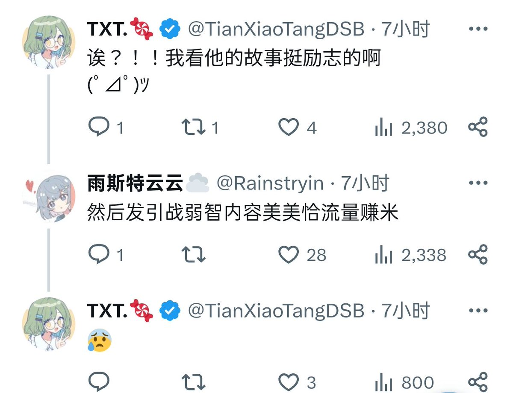

风评？我本来也不是名人啊。我只是一个普普通通的做题蛆，在网上说几句爆论，博大家笑声，发发牢骚，让你们看到一个真实的人。喜欢也好，讨厌也罢，我只是用自己的方式影响这个世界，尽管这些影响微不足道
炒作狗？粉红？支黑？两面派？我不清楚我属于哪一派，我只是真切地写推文，表达我所想的事情。这样我就很满足了。
之前我讲述过，我因为抑郁严重，每周定期做心理咨询，每小时300cny，花费巨大，所讲的东西，不过是我发在推特上自己的经历。后来我因为车祸，停了心理咨询，将这些讲给大家听，获得了很多关注，同时让我有了收益。换句话说，我的内心一直残缺，但是大家的存在，让我残缺的心熠熠生辉，无论收入多与少，我都会感谢大家，起码这让我有价值。
我之前说过，无论如何，小藤的推特都不会消失，更不会注销，这上面是一个真实的我。无论你是否喜欢，这就是小藤，我无意维持自己的形象，我和你们一样都是普通人
炒作狗？粉红？支黑？两面派？我不清楚我属于哪一派，我只是真切地写推文，表达我所想的事情。这样我就很满足了。
之前我讲述过，我因为抑郁严重，每周定期做心理咨询，每小时300cny，花费巨大，所讲的东西，不过是我发在推特上自己的经历。后来我因为车祸，停了心理咨询，将这些讲给大家听，获得了很多关注，同时让我有了收益。换句话说，我的内心一直残缺，但是大家的存在，让我残缺的心熠熠生辉，无论收入多与少，我都会感谢大家，起码这让我有价值。
我之前说过，无论如何，小藤的推特都不会消失，更不会注销，这上面是一个真实的我。无论你是否喜欢，这就是小藤，我无意维持自己的形象，我和你们一样都是普通人
